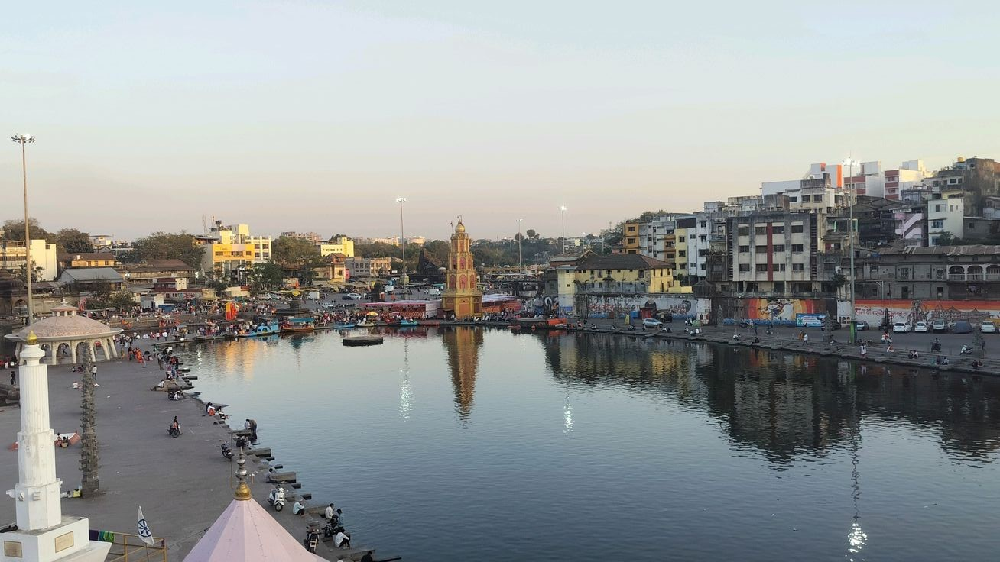
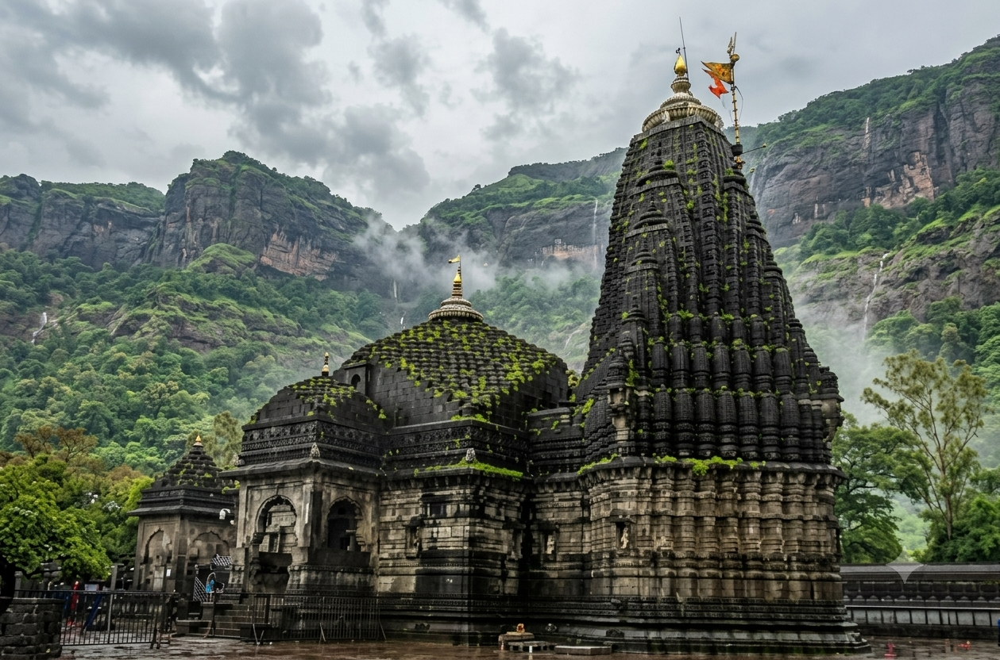
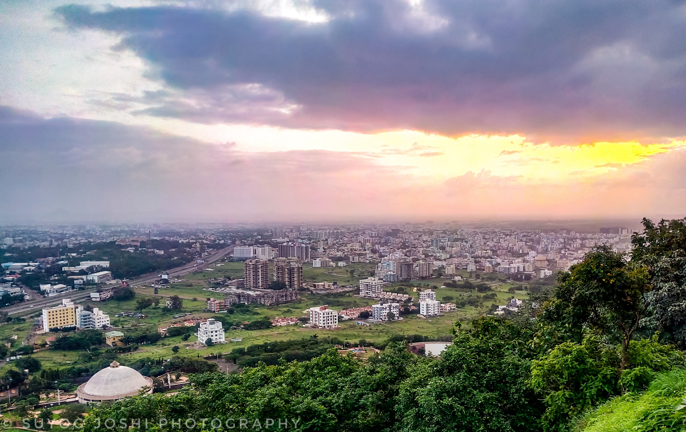

Sacred Banks of River Godavari • South Kashi
Welcome to Panchavati, Nashik
The epic land of five banyan trees, holy river ghats, rich heritage, and vibrant agricultural prosperity.
Explore Panchavati
Ancient Jyotirlinga • Source of River Godavari
Discover Trimbakeshwar
One of the twelve sacred Jyotirlingas, surrounded by the majestic Brahmagiri hills and rich spiritual legacy.
Explore Temple
Wine Capital of India • Cultural Hub
Experience Nashik City
A perfect blend of ancient spiritual heritage, modern vineyards, and breathtaking natural scenery.
Explore Nashik